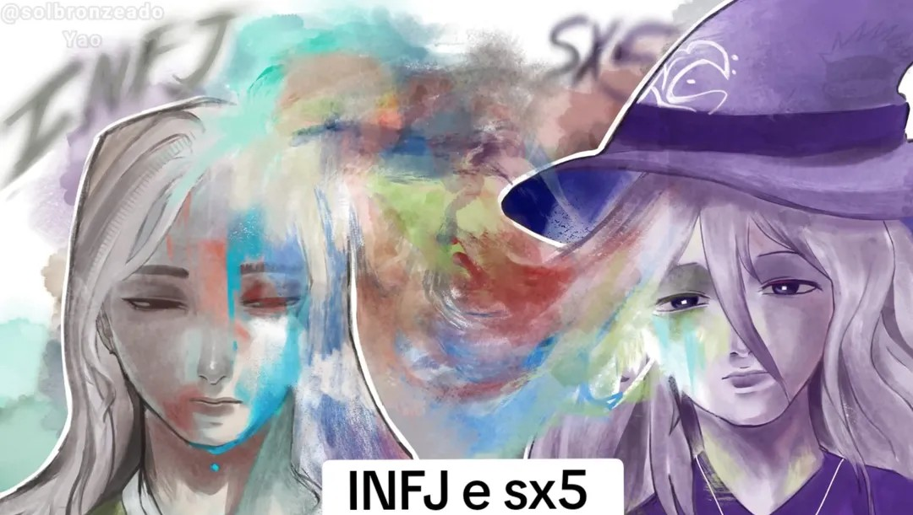

Tipologias
Interesse por MBTI, funções cognitivas, eneagrama e diferentes sistemas utilizados para compreender a personalidade.

Um espaço dedicado a estudos, tipologias e reflexões.
Este é um espaço dedicado a Shenhe, membro da Casa dos MBTIs que costuma contribuir com a comunidade, compartilhar conhecimentos e ajudar outras pessoas em suas jornadas dentro da tipologia.
Por aqui, ele poderá reunir seus estudos sobre MBTI, funções cognitivas, eneagrama e outras tipologias, além de pensamentos, análises e materiais que queira compartilhar com a comunidade.
Interesse por MBTI, funções cognitivas, eneagrama e diferentes sistemas utilizados para compreender a personalidade.
Um espaço para reunir pesquisas, interpretações, análises e descobertas feitas ao longo dos estudos.
Compartilhar conhecimento, ajudar outras pessoas e tornar a comunidade um lugar melhor para aprender sobre tipologia.
Este espaço futuramente poderá reunir textos, estudos, análises e outros conteúdos produzidos por Shenhe.
Conforme novos conteúdos forem preparados, este espaço poderá crescer junto com os estudos de Shenhe dentro da comunidade.
← VOLTAR PARA A CASA DOS MBTIs